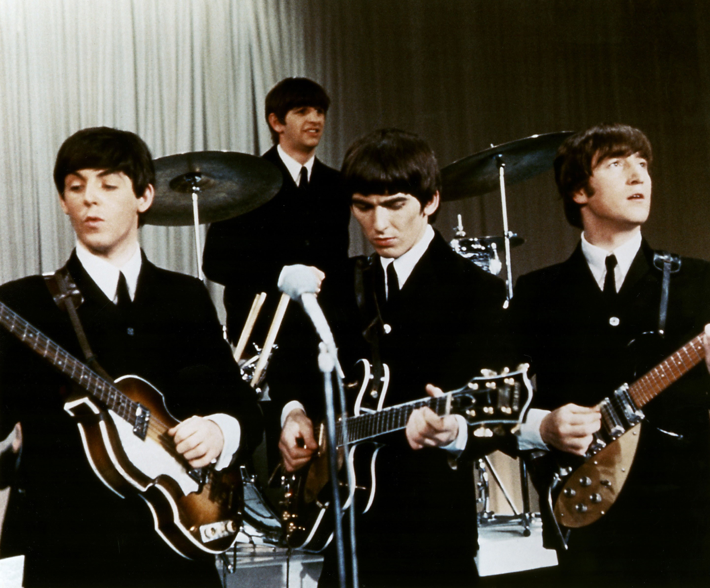

The fab four—John, Paul, George and Ringo, no last names needed—kickstarted the British invasion in the U.S. like Buddy Holly and Elvis Presley before them
However, the Beatles spoke to a younger generation, and ushered in a modern era of rock & roll where experimentation, transformation and taboo topics became de rigueur.
In America, Beatlemania kicked off when the Fab Four appeared on the February 9, 1964, episode of The Ed Sullivan Show. A staggering 73 million viewers in 23 million households watched the fresh-faced, suit-clad quartet perform "I Want To Hold Your Hand," a song then perched at the top of the charts.
"I Want To Hold Your Hand" stayed at No. 1 through mid-March—when it was replaced by "She Loves You" and then immediately after that with "Can't Buy Me Love." In fact, on April 4, the top five songs on the Billboard Hot 100 were by the Beatles. The British Invasion was officially raging in the U.S., and it was all because of the rather unassuming quartet from Liverpool, England: rhythm guitarist/vocalist John Lennon, lead guitarist/vocalist George Harrison, bassist/vocalist Paul McCartney and drummer/vocalist Ringo Starr.
The Beatles set the template for boy bands, although there was nothing pre-fab or manufactured about them. They wrote the majority of their own songs and played their own instruments, and spent several years pre-Beatlemania honing their performance skills in clubs in Hamburg, Germany, and their Liverpool hometown.
The Beatles' roots were equally modest. In 1956, Lennon formed a skiffle group called the Quarrymen, whose lineup shifted around tremendously. This fluidity worked to their advantage, however—especially after the Quarrymen met a guitarist named Paul McCartney at a church gig in July 1957, and recruited him to join the band. McCartney in turn introduced the group to his pal George Harrison, and despite reservations about his age—Harrison was two years younger than Lennon—he too became a member of the Quarrymen.
The band eventually coalesced around the foursome of Lennon, McCartney, Harrison and bassist Stu Sutcliffe, and rechristened themselves the Beatles in August 1960. With drummer Pete Best also on board, the group played countless gigs over the next few years.
This Beatles lineup shifted only slightly in the ensuing years. Sutcliffe ended up leaving the group to attend art school in Germany, which caused McCartney to move over to bass. And in August 1962, just after producer George Martin had signed the Beatles to a record deal with EMI, Best was summarily dismissed and Ringo Starr installed in his place.
This newly configured quartet found success in England just a few months later, when the single "Please Please Me" rocketed up the charts in early 1963. The debut LP of the same name—which was recorded in just one day—arrived in March, hit No. 1 in May and stayed there for nearly the rest of the year.
Please Please Me (1963) accurately captured the Beatles' live sound at that time: tight, taut performances indebted to Buddy Holly-style guitar pop, but augmented with Everly Brothers-caliber harmonies and appealing, heart-on-sleeve romantic vulnerability. The LP didn't feel like a rehash of old sounds or groups, however: From album one, the songwriting team of Lennon-McCartney tapped into something youthful, contemporary and completely different.
Despite the success in the U.K., the Beatles' music was tough to find in the U.S. until early 1964, when the LPs Introducing…The Beatles (1964) and Meet The Beatles (1964) landed in stores. (This trend of different albums and versions released in different countries would continue for years, driving Beatles completists mad.) The band's cultural reign continued unabated—and even expanded to theaters—with 1964's A Hard Day's Night LP and movie.
The goofy, slapstick version of the Beatles' day-to-day life in the film didn't bleed over to the record, which featured a richer, more resonant sound. That's partly because of mature songwriting—the sparse "And I Love Her," harmony-driven "If I Fell" and rollicking, bluesy "Can't Buy Me Love" were seismic steps forward—and Harrison's new toy: a then-new guitar called the Rickenbacker 12-string, which encouraged gorgeous, chiming riffs.
As 1964 turned to 1965, the Beatles' creative and sonic evolution started to gain steam. Help!—once again the soundtrack to a movie of the same name—found the band adding influences such as a string quartet ("Yesterday"). The acoustic, folksy "You've Got To Hide Your Love Away" reflected Lennon's admiration for Bob Dylan, and "Ticket To Ride" featured more Harrison Rickenbacker flourishes and a distinctly psychedelic edge.
Late 1965's Rubber Soul, said to be majorly influenced by the band's collective fondness for marijuana, was even more of a step forward. "Norwegian Wood (This Bird Has Flown)" featured droning sitar, while "Nowhere Man" and its stacked harmonies hinted at a more philosophical bent. And the wistful, gorgeous "In My Life" was heartfelt and sentimental—two hallmarks of the group's music, even during their most experimental phases.
In 1966, the group embarked on their last U.S. tour, an occasion marked by the non-album No. 1 "Paperback Writer" and conservative uproar, courtesy of John Lennon's controversial comment that the Beatles were "more popular than Jesus now." (He later apologized.) At this stage, the Beatles became largely a studio band, which suited them well: The stretch of albums including 1966's Revolver, 1967's Sgt. Pepper's Lonely Hearts Club Band and 1968's The White Album was nothing short of jaw-dropping.
The Beatles saw possibilities and embraced imagination—incorporating colorful orchestral flourishes and lush arrangements, forward-thinking rock and psychedelic sounds, and unorthodox recording methods. Despite a fondness for nursery rhyme-like imagery and absurdity-tinged character sketches, these records had just as many meditations on growing up, nods to political and social discord, and expressions of peace and love which resonated with the denizens of 1967's Summer of Love.
And presaging punk's DIY ways, the Beatles didn't necessarily worry about technique if the song sounded good. On the feel-good, "All You Need Is Love"—debuted in 1967 via the first worldwide satellite broadcast, Our World—Harrison added violin, although he had never actually played the instrument before.
Still, cracks began to appear within the group. Manager Brian Epstein's sudden death in 1967 rattled the band members, while sessions for the sprawling White Album spawned disagreements. The 1968 animated film Yellow Submarine, which featured the group's music, conveyed whimsy, but the optimism was short-lived: In September 1969, Lennon privately told the rest of the group he was leaving the Beatles.
Inner turmoil didn't dampen the success of 1969's more subdued Abbey Road, an album that presaged all facets of '70s music, from sludgy classic rock to AM Gold. But on April 10, 1970, a month before the release of Let It Be—a record marred by more arguments and eventual unhappiness with the finished product—McCartney publicly quit the band.
The dissolution was messy, with legal issues and business acrimony dragging on for years. Over the years, however, relations have softened—McCartney even inducted (and performed with) Starr in 2015, when the latter was inducted into the Rock Hall as a solo act.
Despite being a band for a relatively short time, the Beatles evolved rapidly, and covered an astounding amount of ground during their tenure; in fact, all eras of the band remain massively influential on today's musicians. The group both reflected and directed culture and music, and grew up along with their fans. It's no exaggeration to say that rock & roll as we know it today wouldn't exist without the Beatles.
Inductees: George Harrison (lead guitar, vocals; born February 25, 1943, died November 29, 2001), John Lennon (rhythm guitar, vocals; born October 9, 1940, died December 8, 1980), Paul McCartney (bass, vocals; born June 18, 1942), Ringo Starr (drums, vocals; born July 7, 1940)